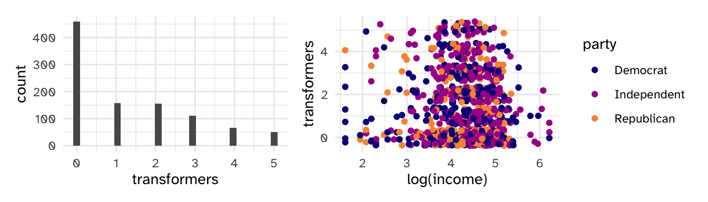
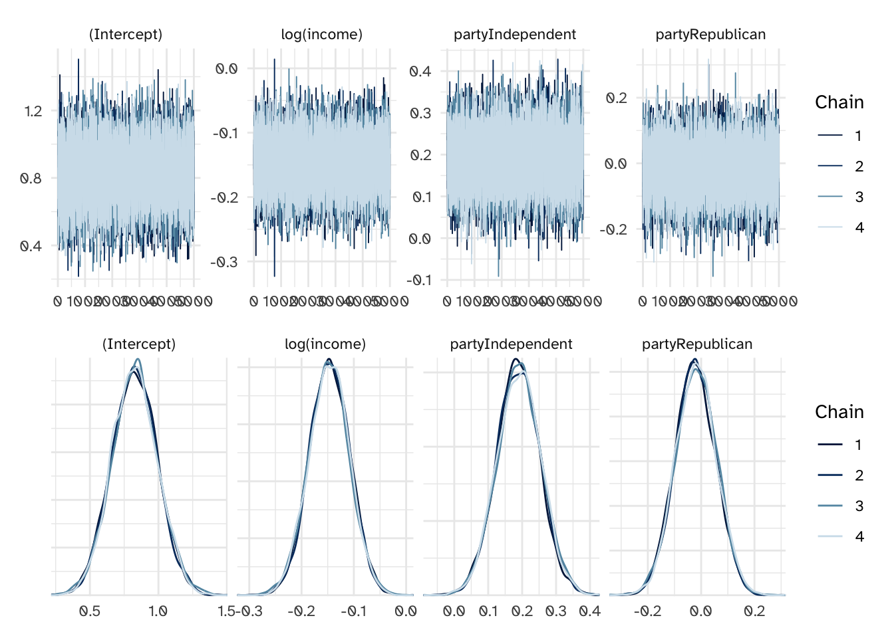
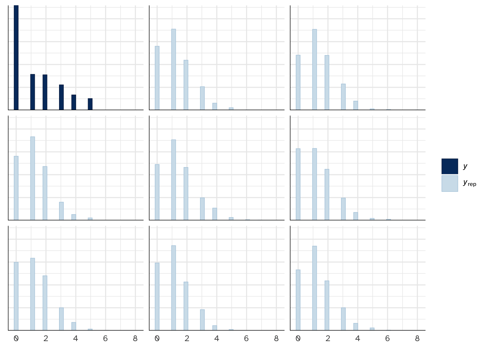
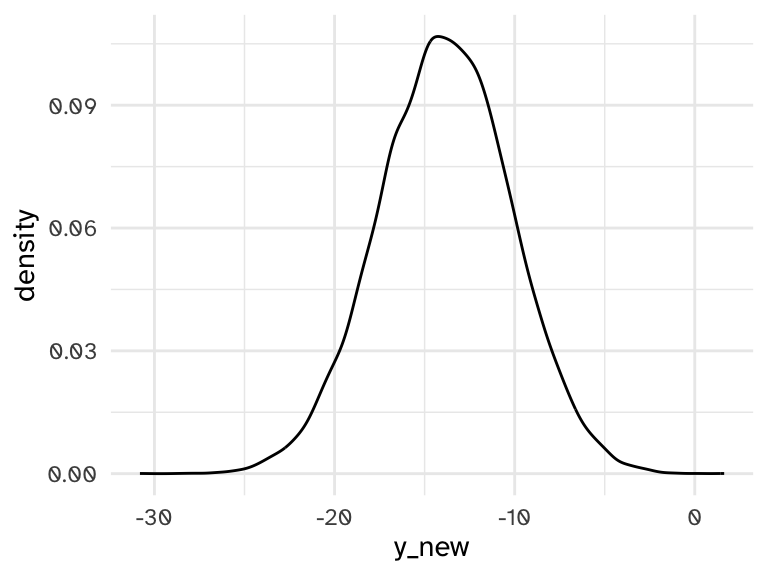

# A tibble: 6 × 3
income party transformers
<dbl> <fct> <dbl>
1 8 Democrat 1
2 68 Democrat 0
3 46 Independent 0
4 51 Republican 0
5 100 Democrat 1
6 54 Democrat 0Exam II Review
Topics/Skills
Topics since exam 01 (will be the emphasis)
- Posterior Inference
- Estimation (credible intervals)
- Hypothesis Testing (probabilities, Bayes Factors)
- Posterior Prediction
- Variability in the parameters + variability in the data generating process
- Normal Regression
- Extension of normal-normal Bayesian model
- Expressing prior distributions
- Inference and interpretation for parameters
- Evaluating regression models
- Posterior predictive checks: if simulated \(Y\) values from our Bayesian model are similar to the observed \(Y\), we have reason to believe our model assumptions are reasonable
- Posterior predictive summaries of the distance between predicted and observed \(Y\)’s (MAE) or how often posterior prediction intervals capture the observed \(Y\) (
within_50andwithin_95) - In-sample vs out-of-sample validation
- Bias/variance tradeoff and overfitting
- Poisson/Negative Binomial regression for counts
- Extension of Poisson-Gamma Bayesian model with predictors
- Overdispersion: what it is and how to fix it
- Expressing as a GLM
- Logistic regression
- \(Y\) is binary
- Interpreting parameters on log-odds, odds, and probability scales
- Classification
- Sensitivity and specificity
- Naive Bayes
- Why is it naive?
- Why is it Bayes?
Major ideas that are not going away and you should be confident doing
- Identifying prior/likelihood distributions from a problem setup
- Difference between posterior and a likelihood/prior and being careful about notation
- Writing out a likelihood from a PDF
- \(f(\theta | y) \propto f(\theta) L(\theta | y)\)
- Why we need/prefer MCMC to solving things analytically
- Informative vs diffuse priors and when each is appropriate
Practice Problems
NoteNote
These are not exhaustive or representative, just meant to give you a sample of the format and type of questions that I might ask

- What is the most appropriate distribution for \(Y_i | \vec{\theta}, X_i\), where \(\vec{\theta}\) is all regression parameters?
- Poisson
- Binomial
- Normal
- The {rstanarm} code below fits the regression model. Write out the formal mathematical equation for the model.
pulse_mod <- stan_glm(
transformers ~ log(income) + party,
data = pulse_data,
family = ___________,
prior_intercept = normal(0,1),
chains = 4, iter = 5000*2,
seed = 84735, refresh =0
)Write out all priors for the model.
Below are the traceplots and density overlays for this model. What do these plots tell you (check all that apply)

- Below is a posterior predictive check. Describe the difference between the data that is plotted in the first (dark blue) histogram compared to the other panels.
pp_check(pulse_mod, plotfun = "hist")
Based on the posterior predictive check above, do you have any concerns about the model?
I would like to find the posterior predictive distribution for a new data point, and begin with the following code.
- Describe the new data point (what is the value for
income? what is the value forparty?) - There are two major problems with this graph. Describe what the two issues are, and/or fix the code so that the resulting plot would show the appropriate posterior predictive distribution.
as_data_frame(pulse_mod) |>
mutate(
y_new = `(Intercept)` + `log(income)`*100
) |>
ggplot(aes(x = y_new)) +
geom_density()
- We approximated the posterior predictive distribution with MCMC (thankfully). Write out the mathematical expression for the posterior predictive distribution, \(f(y_{new}|y)\).